前言

什么是WordPress？
在本WordPress教程中，您将找到使用WordPress创建网站所需的一切。从安装到备份–我们已经涵盖了所有内容。
WordPress于2003年5月27日首次亮相。该软件的创始人是Matt Mullenweg和Mike Little。WordPress可以称为基于PHP和MySQL编程语言的在线，开放源代码网站构建工具。在更高级的术语中，它称为内容管理系统（CMS）。当WordPress首次发布时，它拥有多个用户，但随着时间的推移，它发展成为世界上最大，最受欢迎的CMS。如今，WordPress已为超过7500万个网站提供支持。2016年4月进行的一项研究表明，该内容管理系统已被1000万个最佳网站中的26％以上使用。
为什么WordPress如此受欢迎？
在发现WordPress拥有大量用户之后，您可能会怀疑，为什么它如此受欢迎？应综合考虑多种因素。普遍的观点是WordPress是一个简单的博客工具，但是，它远不止于此。由于WordPress是免费的，和一个开源项目，它允许任何人根据自己的喜好改进和编辑其代码。它还具有数千个免费插件，主题，小部件和其他工具。所有这些功能使您可以创建任何类型的网站，从简单的博客，个人网站或投资组合，到电子商店，知识库或工作委员会。另一个因素是WordPress是完全免费的，并通过PHP和MySQL支持所有托管平台。最重要的是，此CMS会不断更新以提高安全性，包括新功能并提高整体性能的新版本。最后但并非最不重要的一点是，WordPress有一个庞大的社区，整个互联网上都有专门的论坛和讨论。
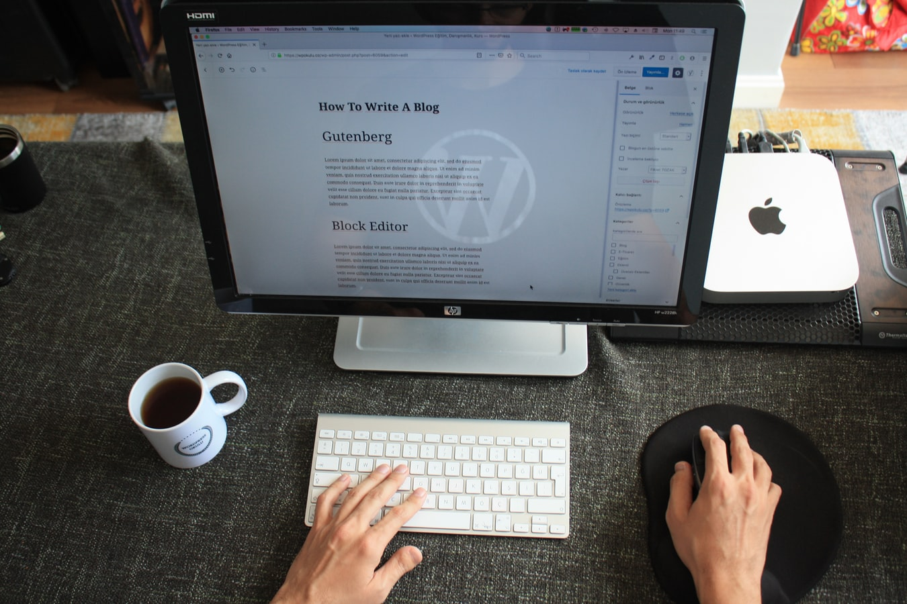什么是CMS？
内容管理系统或简称CMS是具有创建，修改和发布数字内容功能的应用程序。在大多数情况下，它还支持多个用户，从而允许他们协同工作。例如，在WordPress中，可以创建多个管理用户，每个用户具有不同的特权。内容管理系统还包括文本和格式设置功能，可以上传视频，照片，音频，地图甚至您自己的代码。
内容管理系统包含两个主要组件：
- 内容管理应用程序（CMA）。CMA可以称为图形用户界面（GUI），它使用户无需知道HTML或其他编程语言，就可以创建，修改，删除和发布内容。
- 内容交付应用程序（CDA）。CDA负责在CMA中管理和交付内容的后端服务。
值得一提的其他功能包括：
- SEO友好的URL
- 在线支持和社区
- 用户/组功能
- 各种模板和设计
- 安装向导和升级/更新
世界上最流行的三种内容管理系统是WordPress，Joomla和Drupal。
WordPress.com与WordPress.org
WordPress.com和WordPress.org是托管WordPress网站的两种方式。随这两种方法变化的是实际主机。通过使用WordPress.org，您可以免费下载脚本并将其自己托管在本地计算机上或与托管提供商（例如阿里云）一起托管。另一方面，WordPress.com通过为您托管网站来处理所有问题。您无需管理Web服务器，为主机托管或下载软件付费，但是，广告会显示在您的网站上。
WordPress.org和WordPress.com都有某些优点和缺点。
如果您对拥有自己的主机或管理Web服务器不感兴趣，那么WordPress.com可能是您的最佳选择。它是免费的，可以快速设置。您还将具有用于站点自定义的各种功能和选项。但是，它带有价格。您的网站的URL 中将包含WordPress.com，并且您将无法上传自定义主题或插件。也无法在您的网站后面编辑或修改PHP代码。
使用WordPress.org的自托管版本可提供更大的灵活性并控制您的网站。您将能够使用自己的域名，上传主题，插件并进行安装。您还可以访问WordPress文件，数据库和代码，这意味着您将能够根据自己的喜好对其进行修改。最受欢迎和功能最强大的WordPress网站是自托管的，因为它提供了更大的灵活性以及实现自定义功能，代码和设计的能力。最后但并非最不重要的一点是，如果WordPress不是适合您的CMS，拥有自己的托管帐户将使您能够测试其他内容管理系统，例如Drupal或Joomla。
本WordPress教程将重点介绍自托管WordPress版本。
步骤1 –安装WordPress
WordPress受欢迎的原因之一是在Web服务器上运行此CMS所需的系统要求较低：
- PHP版本5.2.4或更高版本。
- MySQL版本5.0.15或更高版本或任何版本的MariaDB。
您可能需要搜索缺少WordPress支持的托管服务提供商。许多主机使用各种自动安装程序来使WordPress安装过程尽可能简单。通过使用自动安装程序，用户不再需要处理数据库创建或文件上传。
在我们的WordPress教程的这一部分中，您将学习两种安装WordPress的不同方法。
在进行WordPress安装之前，您需要确定如何访问网站。您是否要在域名根目录（example.com），子文件夹（example.com/blog）或子域名（blog.example.com）上使用WordPress？仅当您要在子域名上设置WordPress时，才需要采取其他步骤来创建子域名。
手动安装WordPress
如果您想了解WordPress的基础知识并了解其工作原理，则可以手动安装。WordPress以5分钟的安装程序而闻名。该过程非常简单，并且与任何其他软件安装类似。因此，如果您曾经安装过任何计算机程序，那么完成WordPress安装将不会很困难。
在继续操作之前，您需要什么：
- FTP客户端或文件管理器
- 最新版本的WordPress
首先，从官方WordPress.org网站下载最新的WordPress。
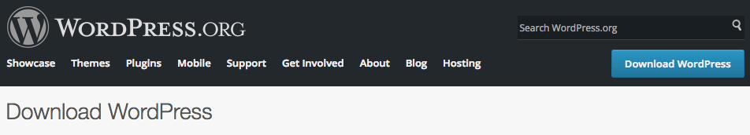下载完成后，您可以开始将WordPress文件上传到您的托管帐户。您可以使用主机提供的文件管理器，也可以使用FTP客户端。使用哪种工具上传WordPress文件没有什么区别。您唯一要考虑的是目标目录。例如，如果要在根域名上使用WordPress，则应将文件上传到public_html文件夹；如果要从子域名或子文件夹提供WordPress，请将文件上传到适当的目录。
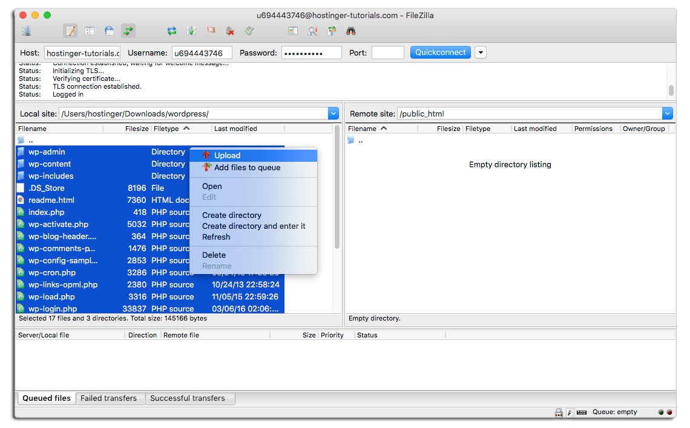WordPress将信息存储在数据库中。因此，必须创建一个。可以在MySQL数据库部分中创建一个新数据库。确保记下数据库详细信息，以备日后使用。
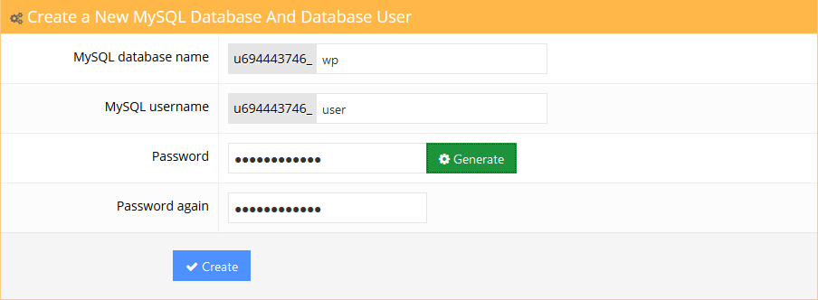现在访问您的域名以开始安装过程。系统将要求您填写MySQL数据库信息，管理员详细信息和站点信息。
若要了解如何迁移WordPress，请参阅本教程。
步骤2 –在WordPress仪表板中导航
安装完成后，您要做的第一件事就是登录WordPress管理员仪表板。通常，在WordPress博客的前端有一个登录页面的链接。但是，某些主题没有此链接。在这种情况下，最简单的登录WordPress的方法是在网站地址的末尾添加wp-admin，如下所示：
http://www.yourdomain.com/wp-admin
该URL会将您定向到登录屏幕，在该屏幕上将要求您输入管理员的用户名和密码。请记住，您已经在WordPress安装过程中输入了这些详细信息。如果忘记了密码，请单击“ 忘记密码”？链接。有关如何登录WordPress的更多详细说明，请参见此处。
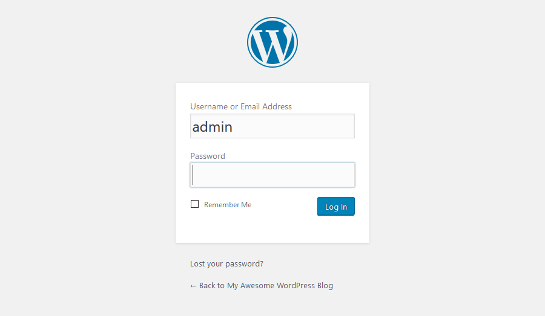登录后，您将看到管理员仪表板。它旨在为您提供整个网站的概述，并包含3个主要部分：

- 页面顶部的工具栏。它包含指向最常用的管理功能和资源的链接。例如，如果将鼠标悬停在您的网站名称上，则将获得指向您网站的公开视图的链接。它还显示简单的通知，例如更新和新评论计数。
- 左侧的主导航菜单。它包含指向WordPress所有管理屏幕的链接。如果将鼠标悬停在菜单项上，将显示带有其他项的子菜单。
- 主要工作区域。
首次登录WordPress管理面板时，您将看到一个欢迎模块，其中包含一些有用的链接以帮助您入门。一旦您对仪表板感到满意，请按“ 关闭”按钮以隐藏此模块。
其他模块：
- 概览框将告诉您您有多少帖子，页面和评论。它还显示您正在运行的WordPress版本和主题。
- 活动框为您提供了有关最新帖子和评论的更多信息。它显示所有评论的状态以及最近评论的简短列表。
- 快速草稿箱。在此框中输入内容将开始新的博客文章。但是，您不能从此处发布一个，因为此框仅用于获取博客帖子的想法，供您稍后使用。
- WordPress新闻。此模块显示最新的WordPress新闻。
这些窗口中的每一个都有小箭头，您可以使用它们快速隐藏框。您也可以将它们拖放到其他位置。
步骤3 –发布内容
使用WordPress创建网站始于发布新帖子或新页面。您可能想知道–帖子和页面之间有什么区别？
答案很简单。WordPress帖子可以分类，标记和存档。WordPress帖子用于发布对时间敏感的内容。相反，页面主要用于静态，无日期的内容。他们没有类别或标签。与我们联系或关于页面是很好的页面示例。
步骤3.1 –创建新帖子
要创建新的WordPress帖子，请在“ 帖子”下打开“ 添加新内容”部分，或从顶部工具栏中选择“ 新建 -> 帖子”选项。
您将看到一个带有一系列发布功能的编辑屏幕。您应该做的第一件事是为您的帖子输入标题。其次，在下面的字段中输入帖子的实际内容。如果要设置文本格式，请使用工具栏选项。它与您可以在MS Word或任何其他流行的文本编辑器中找到的相似。
在屏幕的右侧，您可以看到所谓的元框。每个盒子都有特定的功能。
- 发布。您可以在此处更改帖子的状态和可见性，并对其进行安排。通过单击发布按钮，您的帖子将上线。如果您决定删除帖子，请按移至垃圾箱按钮。
- 类别。在此框上，您可以将帖子分配到特定类别。您甚至可以通过按+添加新类别按钮来创建一个新的。
- 标签框允许快速添加新标签。
- 特色图片。您可以在此处为帖子分配特色图片。它会在帖子的顶部显示（图像位置可能因主题而异）。
步骤3.2 –创建新页面
为了创建新的WordPress页面，请打开“ 页面”菜单下的“ 添加新”部分，或单击顶部工具栏上的“ 新建 -> 页面”按钮。
“添加新页面”部分具有与“ 帖子”部分相同的“所见即所得”文本编辑器。因此，文本输入和格式化的过程是相同的。
您可能还会注意到，“页面”部分没有标签和类别元框。相反，它有一个名为Page Attributes的框。在本部分中，您可以更改页面顺序并设置父页面。如果要在一个父页面下包含多个页面，这将很有用。
步骤4 –安装WordPress插件
WordPress插件的主要目的是扩展WordPress功能。仅通过安装和激活插件，您就可以向WordPress网站添加新功能，而无需任何编码。有成千上万的免费和付费插件可用于不同目的：从社交媒体共享到安全性。因此，您一定会找到适合您需求的插件。
即使是初学者，安装WordPress插件也很容易。免费和免费增值插件可在WordPress.org插件目录上找到。就像主题一样，可以使用内置的WordPress安装程序来安装这些主题。要安装WordPress插件按添加新的下按钮插件，输入你想在搜索领域安装插件的名称。点击安装，然后点击激活按钮。
无法从官方WordPress插件目录中安装成千上万的高级（收费）WordPress插件。如果您购买了高级插件，则必须手动将其上传到WordPress。该过程与主题安装非常相似。要继续，请按插件下的添加新按钮，然后点击上传插件。现在选择一个插件存档并上传。最后，安装并激活插件。如果您需要详细的指南，请参阅本教程
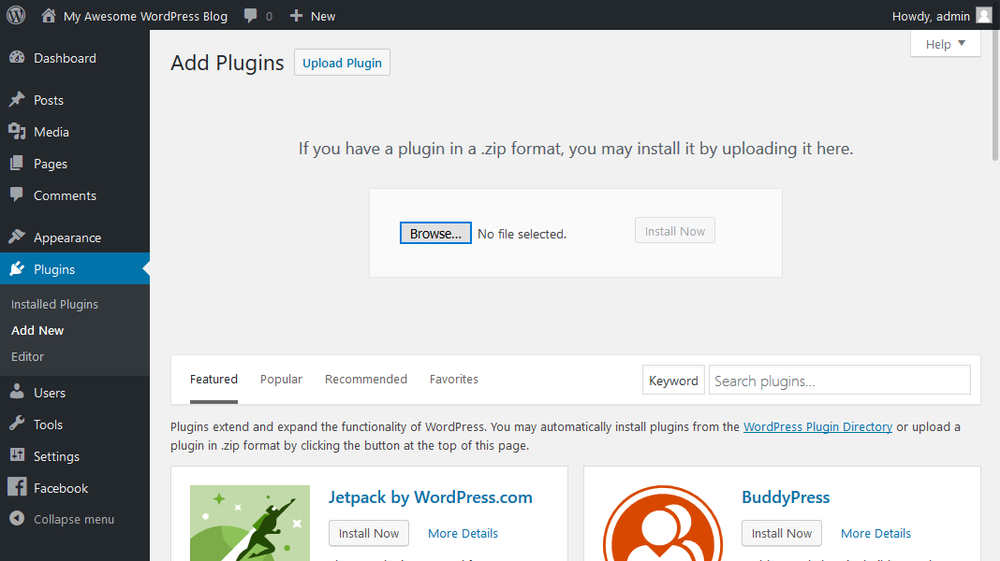必要的WordPress插件
WordPress插件太多了–可能很难选择合适的插件。实际上，许多插件具有相同的用途，例如，有数十个WordPress缓存插件。这就是为什么我们决定列出每个WordPress博客必不可少的最佳WordPress插件。
- Google XML Sitemaps。该插件将自动生成XML网站地图，以更好地优化搜索引擎。易于使用并定期进行更新。
- Yoast SEO。可能是WordPress最受欢迎的SEO插件。它将帮助您改善搜索引擎的优化。从meta标签到写作建议，Yoast SEO插件已具备一切。
- 围栏安全。此插件将使您的WordPress免受黑客和恶意软件的侵害。它具有超级有用的防火墙和恶意软件扫描程序模块。
- 联系表格。简单但功能强大的WordPress联络表单插件。使用此插件创建任何联系人甚至潜在客户生成表格。
不建议使用数十个插件来阻塞Wordpress，因为它会降低网站的性能。通过仅安装必要的插件并删除您不使用的插件来保持WordPress的清洁。
步骤5 –安装WordPress主题
可以通过应用主题来更改WordPress网站的外观。有免费和高级的WordPress主题。其中一些是通用的，可以在任何网站上使用。其他的则是出于非常特定的目的而构建的，例如电子商务主题。
WordPress使主题安装超级容易。从字面上看，只需几分钟即可安装免费的WordPress主题。为了继续进行，请访问“ 外观”部分并搜索外观漂亮的主题。您甚至可以按功能或颜色过滤主题。
主题预览功能使您可以查看所选主题的网站外观。这很有用，因为它可以节省您的时间–您不必仅安装多个主题即可找到适合您需求的主题。
以上方法仅适用于免费和免费主题。如果您购买了精美的高级主题怎么办？在这种情况下，您将必须手动上传主题文件。访问相同的外观部分，按“上载主题”按钮，然后选择主题的.zip文件。上传过程最多可能需要几分钟的时间。完成后，只需激活主题即可。需要确切的步骤吗？请参阅有关如何安装主题的综合教程。

步骤6 –优化WordPress性能
在本WordPress教程中，我们现在学习了如何安装和使用WordPress来创建和管理自己的网站。随着WordPress网站的增长，文本，图像，代码和其他媒体文件的数量也在增加。较大的网站意味着将需要更长的时间来加载。为了避免WordPress的响应时间变慢，您还应该花一些时间进行优化。它将确保您的页面快速有效地加载，从而使您的访问者满意并希望返回更多页面。每个人都至少几次遇到一个缓慢的网站，并在无休止地等待网站加载时感到沮丧。考虑到这一点，花一些时间来提高WordPress速度是一个非常好的主意。
关于WordPress最好的部分是，由于插件和其他可用工具的数量众多，它真的很容易优化。您甚至不需要任何编码知识，就可以使您的WordPress网站闪电般快速。为了使您步入正轨，我们将介绍一些WordPress优化技术，这些技术可以显着提高您的网站速度。
步骤6.1 –使用WordPress缓存插件
优化WordPress网站的第一步是设置WordPress缓存插件。简而言之，缓存是临时数据存储。在大多数情况下，活动数据将被缓存，从而减少了加载时间。例如，当您访问一个经常访问的网站时，您的浏览器将在其缓存中包含该网站的静态内容的一部分。结果，浏览器需要从服务器请求更少的文件和信息，最终导致更快的加载。WordPress缓存插件通过创建网站的静态版本并提供它来工作，而不是每次有人刷新或重新进入您的网站时都加载所有PHP脚本。
最受欢迎的WordPress缓存插件是：
- WP超级缓存
- W3总缓存
- WP最快的缓存
您可以在此处找到有关如何为WordPress网站实现WP Super Cache插件的详细指南。
步骤6.2 –优化WordPress图像
为了使您的WordPress网站快速运行，图像优化是另一项至关重要的任务。通常，有两个导致图像加载缓慢的主要问题：
- 使用太大的图像。例如，您上载了一张500 x 500尺寸的图片，但您的网站将其尺寸调整为100 x100。因此，访问者的浏览器将必须首先下载较大的文件，将其缩小然后才显示。正确的方法是简单地上传100 x 100尺寸的图片，这样就可以避免过多的缩小图片的任务。这样一来，图像还将占用更少的空间，从而总体上提高了速度。有关如何定位此类图像并按比例缩小图像的详细指南，请参见此处。
- 图像未完全压缩。通过正确压缩图像，可以节省大量空间和带宽。幸运的是，WordPress有一个非常出色的插件可以为您提供帮助，它称为WP Smush。您可以在此处找到有关如何实现此插件和优化WordPress图像的详细指南。
您的WordPress网站拥有的图像越多，此优化任务将越有益。
步骤6.3 –为WordPress启用gzip压缩
为WordPress网站启用gzip压缩是提高速度和性能的好方法。简而言之，gzip压缩的工作原理是在文本文件中找到相似的字符串并暂时替换它，从而减小文件大小。HTML和CSS文件具有大量重复的文本和空格，从而使gzip压缩非常有效。总体而言，它可以将WordPress页面的大小最多减少50-70％。
有几种启用gzip压缩的方法：
- 通过.htaccess文件启用gzip压缩（推荐）。可以在这里找到更详细的WordPress教程。
- 通过WordPress插件（例如GZip Ninja Speed）启用gzip压缩。
您应该记住的一件事是gzip压缩可能会稍微增加CPU使用率。如果CPU不是问题，那么gzip压缩是优化WordPress网站的绝佳方法。
步骤6.4 –推迟WordPress中JavaScript的解析
大多数主题，插件和社交媒体插件都使用大量JavaScript，这些JavaScript默认是在访问网站时首先加载的。这将使HTML和其他可视内容仅在加载JS之后出现。您可以推迟对JavaScript的解析，以便视觉元素显示得更快，而之后将加载各种使用JavaScript的社交媒体按钮和其他内容。这是Google开发人员推荐的一种经常被忽视的技术。在WordPress中，您可以使用WP Deferred JavaScripts或Speed Booster Pack这样的插件轻松地做到这一点。在此处可以找到有关如何在WP网站上实现这些工具的更详细的教程。
步骤6.5 –使用内容传送网络
实施内容交付网络（简称CDN）将通过在全球多个数据中心中缓存内容来加快WordPress的速度。访客进入您的站点后，内容将通过最近的可用数据中心交付，从而带来更好的前端体验。CDN还可以与WordPress缓存插件配合使用，并且有免费的解决方案可以帮助您入门。例如，CloudFlare有一个免费计划，该计划提供CDN的两个优点，同时保护您的站点免受DDoS攻击。有关如何在WordPress上实现它的逐步说明，您可以查看此WP教程。
步骤6.6 –从静态资源中删除查询字符串
GTMetrix和其他优化工具建议从CSS和JS中删除查询字符串，以改善这些元素的缓存。前面提到的WordPress插件Speed Booster Pack可以帮助您完成此任务。有关更多特定信息，请参阅WordPress指南。
步骤6.7 –启用延迟加载
通常，打开网页时，所有内容都会立即加载，这称为eager loading。或者，可以将某些对象（例如图像）的初始化延迟到需要它们之前，这称为延迟加载。最常见的做法是仅在从访问者的视角或屏幕上可见的情况下显示图像。要利用此技术，您需要做的就是安装并启用诸如Lazy Load或Rocket Lazy Load之类的插件。
步骤7 –保持WordPress安全
最后但并非最不重要的一点，为了拥有成功的WordPress网站，您必须加强其安全性。正如WordPress是世界上最受欢迎的CMS一样，事实证明它也是被黑客入侵最多的。但是，您可以采取一些措施来保护您的站点免遭黑客攻击和其他恶意活动。
步骤7.1 –保持WordPress更新
拥有安全环境的最重要因素之一就是始终更新和使用WordPress，主题和插件的最新版本。大多数更新包括安全性调整，漏洞修复，并阻止它们在将来的版本中被利用。黑客之间的常见做法是利用运行带有已知漏洞的过时WordPress版本的网页。默认情况下，WordPress会在发布新版本时自动进行更新，但是，它可能并不总是有效，或者某些主机上的功能可能已被禁用。通常，当新版本的WordPress到来时，通知会显示在仪表板的顶部。您也可以通过Dashbard-> Updates部分更新主题和插件。
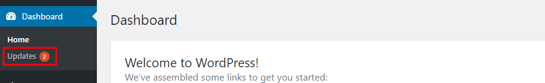步骤7.2 –使用唯一的用户名和密码
Admin是所有WordPress安装中默认设置的用户名。强烈建议对其进行更改，因为它将为您的登录凭据增加额外的安全性。假设有人知道您的密码，但是他们不知道用户名。最终结果是，该人仍将无法访问您的仪表板，因为他们不知道用户名。将值保留为admin可以使黑客的工作变得容易得多，因此应始终对其进行更改。
设置密码时，请确保包括数字，大写字母和特殊符号。如果您难以跟踪所有密码，则可以使用“ 上次通过”之类的工具来存储它们。这将省去记住所有不同密码的麻烦，同时让您在密码难度上大吃一惊。
步骤7.3 –备份WordPress
对于任何网站而言，生成备份都是至关重要的任务。它不仅可以提高安全性，还可以为您提供可靠的方式来还原站点，以防出现意外错误或问题。您可以手动执行备份或使用自动化。该手册的过程将涉及下载文件和WordPress网站的MySQL数据库。但是，如果您发布大量新帖，进行更改或管理多个不同的网站，那么每次手动下载所有内容都会是一个真正的麻烦。
此外，如今，大多数托管服务提供商都提供自动帐户备份。作为一种额外的安全措施，您可以使用WordPress插件来自动化每月，每周甚至每天备份。他们将为您节省大量时间，还可以选择将备份的WordPress文件和数据库存储到远程位置（例如网盘）。您可以使用以下插件：
- UpdraftPlus一个插件，能够将WordPress备份到远程位置并将其还原。
- BackUpWordPress是具有自动化功能的轻量级备份插件。它允许您排除某些文件夹，安排执行时间并支持几种不同的语言。
这些是您可以加强WordPress的一些基本步骤。有关更多安全提示和技巧，请参阅我们的有关如何保护WordPress的指南。
手动迁移WordPress网站
手动迁移要求您传输文件和数据库，然后编辑wp-config.php文件。您可以通过主机控制面板上的文件管理器或使用FileZilla等FTP客户端来完成所有操作。
步骤1.备份您的WordPress文件和MySQL数据库
首先，您需要将所有WordPress文件下载到您的计算机上。这些文件将稍后上传到您的新托管帐户。
- 将FileZilla连接到您的旧站点服务器。
- 打开public_html文件夹，然后选择其中的所有文件。
- 右键单击并选择下载。
下载完成后，就该创建MySQL数据库的备份了：
- 从控制面板访问phpMyAdmin页面。
- 选择存储WordPress文件的数据库，然后按“ 导出”按钮。 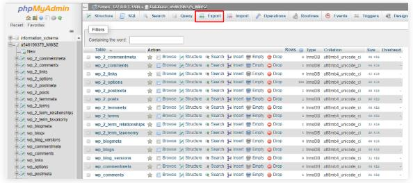
- 选择“快速” 方法导出整个数据库，然后选择“ SQL”作为格式。
- 打Go。您的数据库文件将自动保存到桌面目录。

步骤2.将WordPress文件和MySQL数据库上传到您的新主机
迁移WordPress网站的下一步是将您下载的文件上传到新主机。
- 解压缩WordPress备份文件。
- 将FileZilla连接到新的托管帐户，然后导航到“ 远程站点”列中的public_html文件夹。
- 从“ 本地站点”列中找到要上传的文件，右键单击文件，然后选择“ 上传”。 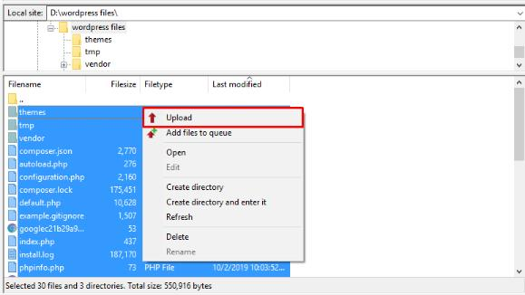
完成该步骤后，现在我们需要上传MySQL数据库：
- 打开新的托管帐户的控制面板，然后转到MySQL数据库。
- 创建一个新的数据库，并记下 数据库名称，用户名 和 密码。
- 返回数据库 -> phpMyAdmin并选择新数据库。
- 点击页面顶部的导入标签。
- 选择选择文件 按钮，然后上传已下载的MySQL备份文件。 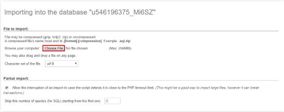
- 保留所有设置，然后单击执行。
步骤3.使用您的新数据库详细信息更新wp-config.php
接下来，通过在新的托管帐户中编辑wp-config.php文件，指定新的MySQL数据库的凭据。
- 从FileZilla 重新访问public_html文件夹，然后找到wp-config.php文件。
- 右键单击并选择查看/编辑。
- 使用新的数据库详细信息更改这些值：
- DB_NAME –数据库名称。
- DB_USER –数据库用户名。
- DB_PASSWORD –用户密码。
- DB_HOST –数据库主机名（此值通常是 localhost， 但可能会因您的托管平台而异）。 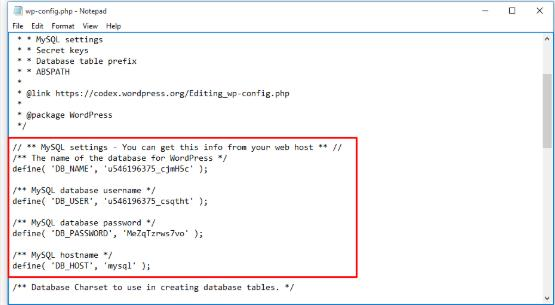
- 选择保存，然后会出现一个弹出窗口。单击是。
步骤4.更新WordPress URL（可选）
仅当您计划在迁移WordPress网站时使用其他域名时，才应执行此步骤。在继续之前，请确保新域正常运行并正确指向您的新托管平台。
- 转到phpMyAdmin页面，然后选择wp_options表。
- 在option_name列下找到 站点的URL 和 主页 。
- 双击option_value 下的字段， 然后用新域替换旧域。 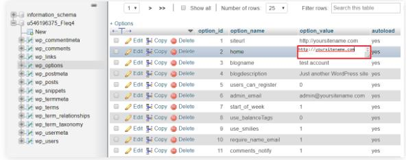
- 访问WordPress 仪表板，然后安装并激活Velvet Blues Update URLs插件。
- 导航至工具 -> 更新网址。填写旧域和新域的字段，然后选中所有复选框。 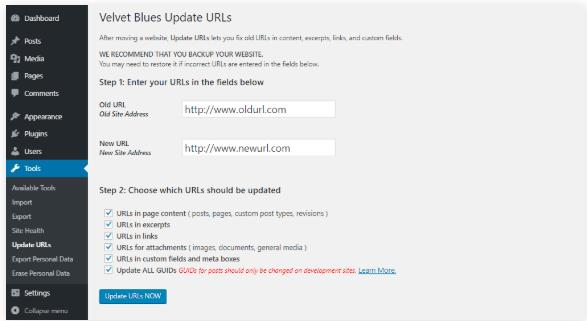
- 按“立即更新URL”。
或者，您也可以通过通过phpMyadmin 运行查询来更新所有WordPress URL 。
如何修复WordPress中的upload_max_filesize错误
大多数托管提供程序都为运行应用程序和脚本指定的PHP内存设置了限制。上传的文件超过了php.ini中的upload_max_filesize指令，当您上传的文件超出了Web服务器设置的限制时，这是在WordPress网站上发生的错误。
尽管这个错误看起来很可怕，但解决方案非常简单。
方法1.编辑.htaccess文件
打开网站根目录，找到.htaccess文件，然后右键单击以编辑。
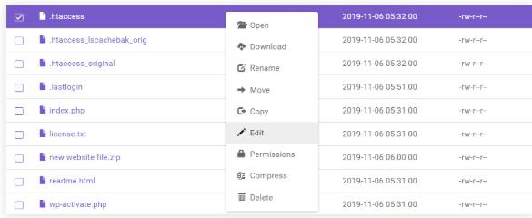在文件底部添加以下行：
php_value upload_max_filesize 256M
并保存更改。
接着尝试再次上传文件，如果错误仍然存在，请通过将以下行添加到.htaccess文件中来增加其他PHP限制：
php_value post_max_size 256M
php_value memory_limit 512M
php_value max_input_time 180
php_value max_execution_time 180
只要您的网站托管提供商支持，就将PHP限制调整为任何所需的值。
方法2.编辑wp-config.php文件
进入网站目录public_html来编辑wp_config.php文件。在“That’s all, stop editing! Happy publishing”之前添加以下行：
@ini_set（'upload_max_size'，'256M'）;
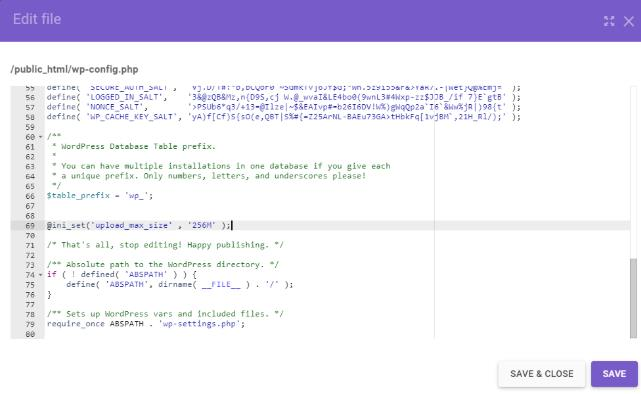保存文件，刷新Web浏览器，然后尝试再次上传
域名和服务器
作为一个建站新手，你碰到的第一个问题可能就是在哪里买域名和服务器。大可不必在这上面浪费时间，就在阿里云（万网）注册域名，实名一下，买一台【阿里云ECS云服务器】，轻量应用服务器也可以，只是ECS云服务器相对于轻量应用服务器的应用场景更多些，轻量应用服务器适用于小型Web网站类的单机应用。简单的说，如果要好一点的就买ECS云服务器，差一点的就买轻量应用服务器。根据自己的需要选择，另外如果你是新用户，阿里云会有专属的低价优惠给到你，而且一个用户只有一次机会，个人推荐一次多买几年，因为续费的时候就享受不到这么大的优惠了。并且支持五天无理由退款，如果用着不满意，也是可以申请退款的。